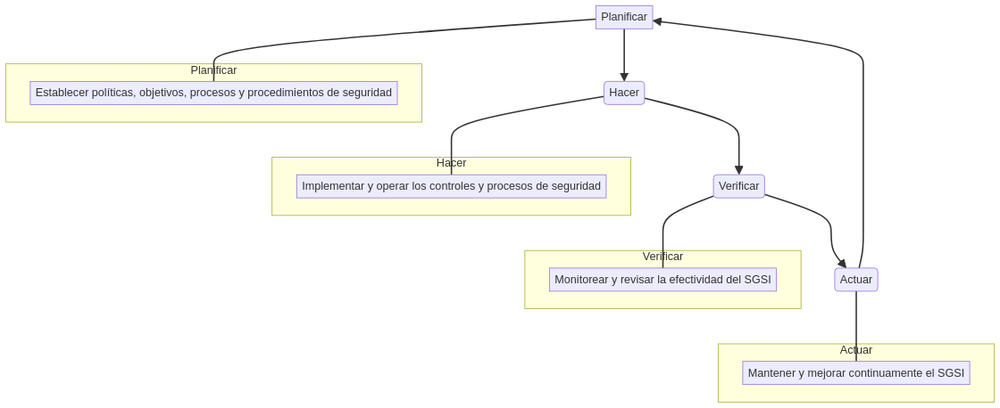
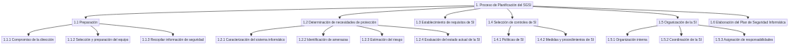

Metodología para la Gestión de la Seguridad Informática (PSI)
La seguridad de la información es un pilar fundamental en el mundo digital actual. Las organizaciones, sin importar su tamaño o sector, manejan activos de información críticos que requieren protección constante. Una Metodología para la Gestión de la Seguridad Informática (PSI), basada en estándares internacionales como la serie ISO/IEC 27000, proporciona un marco estructurado para abordar este desafío.
Este documento, diseñado para mi blog en la especializacion de ciberseguridad, desglosa los aspectos clave de una metodología PSI, ofreciendo una guía didáctica y visualmente atractiva para profesionales y entusiastas.
¿Qué es un Sistema de Gestión de la Seguridad Informática (SGSI)?
Un Sistema de Gestión de la Seguridad Informática (SGSI) es un conjunto de políticas, procedimientos, directrices y recursos asociados, gestionados por una organización para proteger sus activos de información. Su objetivo principal es minimizar los riesgos a los que están expuestos los bienes informáticos, asegurando la confidencialidad, integridad y disponibilidad de la información.
La implementación de un SGSI ayuda a las entidades a:
- Identificar qué se debe proteger.
- Determinar de qué se necesita proteger.
- Estimar la probabilidad de materialización de las amenazas.
- Implementar controles de seguridad rentables.
- Revisar y mejorar continuamente el proceso.
El Ciclo PHVA en la Gestión de la Seguridad Informática
La metodología PSI adopta el modelo de procesos Planificar-Hacer-Verificar-Actuar (PHVA), un ciclo de mejora continua que estructura los procesos del SGSI:
- Planificar (Plan): Establecer las políticas, objetivos, procesos y procedimientos de seguridad.
- Hacer (Do): Implementar y operar los controles y procesos de seguridad.
- Verificar (Check): Monitorear y revisar la efectividad del SGSI.
- Actuar (Act): Mantener y mejorar continuamente el SGSI.

Figura 1: Ciclo PHVA aplicado a los procesos del SGSI.
Fases de la Metodología PSI
La metodología se divide en dos partes principales:
- Sistema de Gestión de la Seguridad Informática (SGSI): Describe la concepción, implementación y operación del sistema.
- Plan de Seguridad Informática (PSI): Detalla la estructura y el contenido del documento que formaliza el SGSI.
Primera Parte: Sistema de Gestión de la Seguridad Informática (SGSI)
Esta fase se centra en el ciclo de vida del SGSI, abarcando cuatro procesos clave:
1. Proceso de Planificación del SGSI
La planificación es la piedra angular del SGSI. Implica:
- Preparación:
- Compromiso de la dirección.
- Selección del equipo de trabajo.
- Recopilación de información de seguridad.
- Determinación de las necesidades de protección:
- Caracterización del sistema informático.
- Identificación de amenazas.
- Estimación de riesgos.
- Evaluación del estado actual de la seguridad.
- Establecimiento de los requisitos de seguridad.
- Selección de controles de seguridad:
- Políticas de seguridad.
- Medidas y procedimientos.
- Organización de la seguridad:
- Estructura interna.
- Coordinación.
- Asignación de responsabilidades.
- Elaboración del Plan de Seguridad Informática (PSI).

Figura 2: Proceso de Planificación del SGSI.
2. Proceso de Implementación del SGSI
Una vez planificado, el SGSI debe ser implementado. Esto incluye:
- Programa de Desarrollo de la Seguridad Informática: Un plan detallado para la implementación de los controles.
- Factores Críticos de Éxito: Elementos clave que aseguran una implementación exitosa.
3. Proceso de Verificación del SGSI
La verificación asegura que el SGSI funciona como se esperaba. Se utilizan:
- Métodos de Medición: Para evaluar el rendimiento de los controles.
- Indicadores de Medición: Métricas que proporcionan una visión del estado de la seguridad.
4. Proceso de Actualización del SGSI
La seguridad informática es un campo en constante evolución. El SGSI debe ser actualizado periódicamente para hacer frente a nuevas amenazas y vulnerabilidades.
Segunda Parte: Estructura y Contenido del Plan de Seguridad Informática (PSI)
El PSI es el documento que formaliza el SGSI. Su estructura típica incluye:
- Alcance del Plan: Define los límites del PSI.
- Caracterización del Sistema Informático: Describe los activos de información a proteger.
- Resultados del Análisis de Riesgos: Presenta los hallazgos del análisis de riesgos.
- Políticas de Seguridad Informática: Establece las reglas y directrices de seguridad.
- Responsabilidades: Define quién es responsable de qué en materia de seguridad.
- Medidas y Procedimientos de Seguridad: Detalla los controles específicos a implementar en áreas como:
- Clasificación y control de activos.
- Seguridad del personal.
- Seguridad física y ambiental.
- Seguridad de las operaciones.
- Control de acceso.
- Protección contra malware.
- Copias de seguridad.
- Seguridad en redes.
- Gestión de incidentes de seguridad.
- Anexos: Información adicional, como listas de usuarios, registros y control de cambios.
Conclusión
Una metodología PSI bien implementada es esencial para cualquier organización que se tome en serio la ciberseguridad. Proporciona un enfoque estructurado y proactivo para proteger los activos de información, minimizar los riesgos y garantizar la continuidad del negocio. Al adoptar un enfoque basado en el ciclo PHVA, las organizaciones pueden mejorar continuamente su postura de seguridad y adaptarse a un panorama de amenazas en constante cambio.